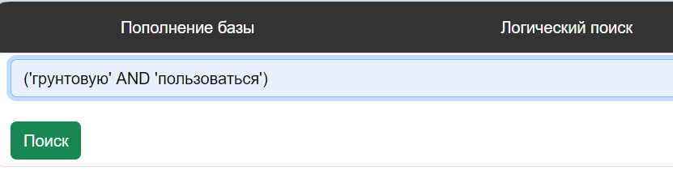
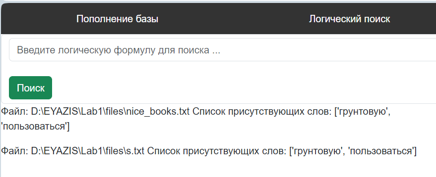

- 1. Вкладка 'Пополнение базы' служит для того чтобы заполнить базу данных нужными данными,
есть поле ввода ссылки и название файла в который будет сохранено содержимое ссылки, также выводит сколько файлов в базе

- 2. Вкладка 'Логический поиск' служит для того чтобы находить необходимую информацию,
есть поле ввода для запроса и кнопка найти, выводит в каких файлах и какое слово было найдено


- 3. Вкладка 'Метрики' содержит информацию по точности, ошибке, полноте и другим измерениям